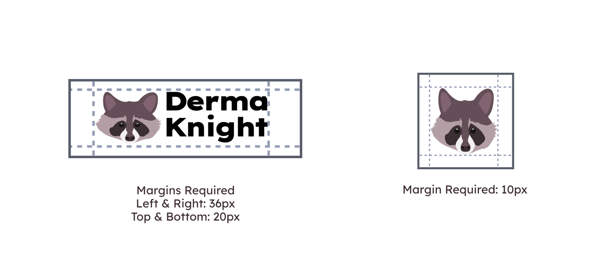
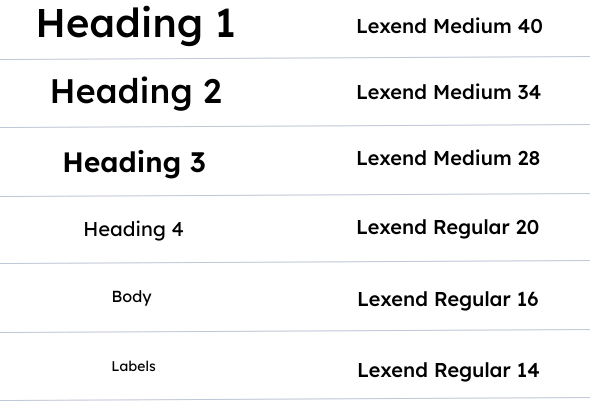
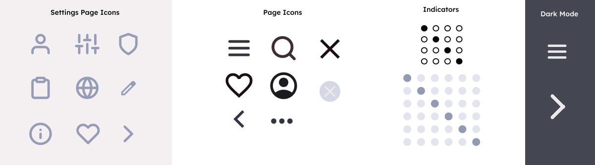
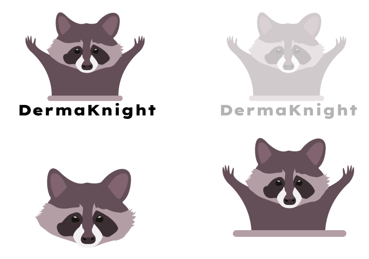

Logo
Our main logo features a muted plum raccoon, representing the contrast between perception and reality. While raccoons are often thought of as dirty animals, they are quite clean. They wash their food before eating and regularly groom themselves in the wild. This idea connects to our goal of embracing the notion that men can take pride in their hygiene. Just as raccoons are misunderstood, we want to redefine outdated views and celebrate self-care as a natural and essential part of masculinity.

Favicon Variations

Technical Requirements
Colour Palette
Our colour palette was thoughtfully selected to create a sense of cleanliness and tranquility, offering a refreshing alternative to the traditional green tones often associated with skincare. By choosing a distinct and soothing color scheme, we aim to set ourselves apart while reinforcing our commitment to a calm and revitalizing experience.
Primary
We chose French Gray for our Primary Colour. We wanted a darker, pastel blue that was almost grey. This invokes a feeling of cleanliness without being too corporate.
Tertiary
Lavender is our tertiary colour because this colour is calm and simple which gives the web app an overall professional feel.
Secondary
Mountbatten Pink is a unique change from the typical greens and neutrals associated with the skin-care industry. This muted, dusty pink exudes a sense of warmth, elegance, and tranquility.
Accent
Eggplant conveys a feeling of luxury. Its rich, deep hue sets our brand apart while giving a sense of elegance and self-care, making it perfect for a soothing yet luxurious skincare experience.
Text - Dark
Liquorice is used for our text when dark mode is not activated. This colour is used for most of our text on light background.
Text - Light
Platinum is used for our text in buttons that have darker backgrounds or when dark mode is activated.
Visual Examples
The following are some visual examples of buttons and text boxes with different coloured backgrounds.
Accessibility
These are some example images of our colour palette’s contrast and accessibility tests.
This colour combination is used for most blocks of text. The dark colour is the text colour and the light colour is the background colour.
This colour combination is used for our login and sign up buttons on the sign up/log in overlay, the dark colour is the text colour and the light colour is the background colour.
This colour combination is used for our search bar button, the dark colour is the text colour and the light colour is the background colour.
This colour combination is used for our the nav bar across most of our screens, the dark colour is the text colour and the light colour is the background colour.
Typography
Logo Font - Lexend Giga
We chose Lexend Giga for our logo font because of its readability and modern, minimalistic design. Its clean lines and balanced letterforms create a sleek and professional look, making it both visually appealing and easy to recognize.
Lexend
We chose Lexend for our web app because it’s easy on the eyes and makes reading long sections of text more comfortable and less overwhelming. It’s designed to reduce visual stress and improve reading flow, making it perfect for a web app heavy with informational text. The clean, modern look and flexible font weights gives the app a polished and minimalistic feel. Additionally, Lexend supports over 60 languages, making it extremely versatile.
Headings
Graphics & Icons
Icons
Our app uses industry-standard icons to create a seamless and intuitive user experience. By leveraging familiar symbols, like a magnifying glass for search, a heart for saved/saving, and a gear for settings. Users can quickly navigate without a learning curve. These universally recognized icons enhance usability, ensuring that actions and features are immediately clear, reducing confusion, and improving efficiency. This approach aligns with best UX practices, making our app more accessible and user-friendly for all.
Graphics
Our mascot is a raccoon because its distinct dark eye markings perfectly represent the common struggle with dark circles and tired-looking skin. Just like how raccoons are known for their resilience and adaptability, our skincare brand is designed to help men tackle their skin concerns with ease and confidence. We wanted a mascot that was both relatable and lighthearted, reminding everyone that self-care doesn’t have to be complicated, it can be effortless, effective, and even a little fun.
Images
Our app features high-quality images of various ingredients to ensure clarity and ease of recognition, helping users make informed choices at a glance. Additionally, we’ve prioritized diversity and inclusivity by incorporating photos that represent different skin tones, making our visuals more relatable and welcoming to a broader audience. By showcasing real representation, we create a more inclusive experience where everyone feels seen and valued.